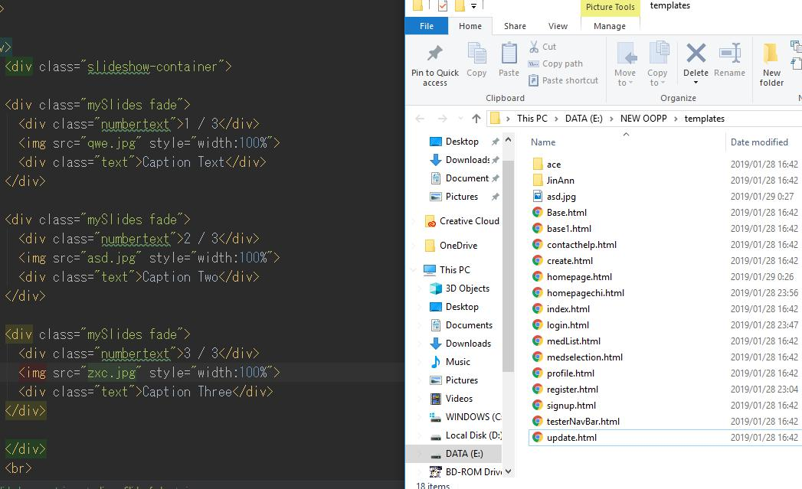
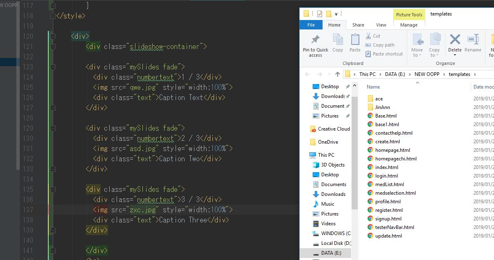
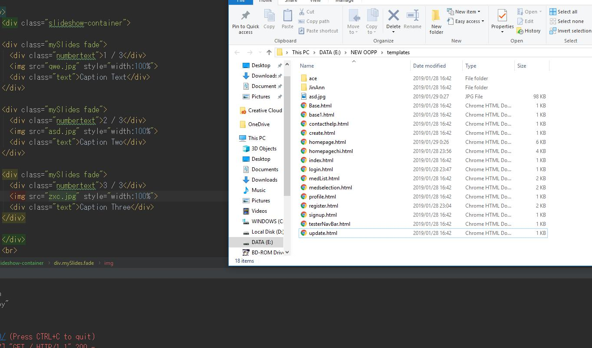

{% extends 'JinAnn/Base.html' %}
<h1>{% block title %}Homepage{% endblock %}</h1>
{% block content %}

    <title>Homepage</title>

    <style>

        /* The Modal (background) */
        .modal {
          display: none; /* Hidden by default */
          position: fixed; /* Stay in place */
          z-index: 1; /* Sit on top */
          padding-top: 100px; /* Location of the box */
          left: 0;
          top: 0;
          width: 100%; /* Full width */
          height: 100%; /* Full height */
          overflow: auto; /* Enable scroll if needed */
          background-color: rgb(0,0,0); /* Fallback color */
          background-color: rgba(0,0,0,0.4); /* Black w/ opacity */
        }

        /* Modal Content */
        .modal-content {
          background-color: #fefefe;
          margin: auto;
          padding: 20px;
          border: 1px solid #888;
          width: 80%;
        }

        /* The Close Button */
        .close {
          color: #aaaaaa;
          float: right;
          font-size: 28px;
          font-weight: bold;
        }

        .close:hover,
        .close:focus {
          color: #000;
          text-decoration: none;
          cursor: pointer;
        }


        * {box-sizing: border-box;}
        body {font-family: Verdana, sans-serif;}
        .mySlides {display: none;}
        img {vertical-align: middle;}

        /* Slideshow container */
        .slideshow-container {
          max-width: 1000px;
          position: relative;
          margin: auto;
        }

        /* Caption text */
        .text {
          color: #f2f2f2;
          font-size: 15px;
          padding: 8px 12px;
          position: absolute;
          bottom: 8px;
          width: 100%;
          text-align: center;
        }

        /* Number text (1/3 etc) */
        .numbertext {
          color: #f2f2f2;
          font-size: 12px;
          padding: 8px 12px;
          position: absolute;
          top: 0;
        }

        /* The dots/bullets/indicators */
        .dot {
          height: 15px;
          width: 15px;
          margin: 0 2px;
          background-color: #bbb;
          border-radius: 50%;
          display: inline-block;
          transition: background-color 0.6s ease;
        }

        .active {
          background-color: #717171;
        }

        /* Fading animation */
        .fade {
          -webkit-animation-name: fade;
          -webkit-animation-duration: 1.5s;
          animation-name: fade;
          animation-duration: 1.5s;
        }

        @-webkit-keyframes fade {
          from {opacity: .4}
          to {opacity: 1}
        }

        @keyframes fade {
          from {opacity: .4}
          to {opacity: 1}
        }

        /* On smaller screens, decrease text size */
        @media only screen and (max-width: 300px) {
          .text {font-size: 11px}
        }
</style>
<a href=/homechi>中文</a>

    <div>
        <div class="slideshow-container">

        <div class="mySlides fade">
          <div class="numbertext">1 / 3</div>
            
          <div class="text">Caption Text</div>
        </div>

        <div class="mySlides fade">
          <div class="numbertext">2 / 3</div>
          
          <div class="text">Caption Two</div>
        </div>

        <div class="mySlides fade">
          <div class="numbertext">3 / 3</div>
          
          <div class="text">Caption Three</div>
        </div>

        </div>
        <br>

        <div style="text-align:center">
          <span class="dot"></span>
          <span class="dot"></span>
          <span class="dot"></span>
        </div>
    </div>
        <!-- Trigger/Open The Modal -->


    <!-- The Modal -->
    <div id="myModal" class="modal">

      <!-- Modal content -->
      <div class="modal-content">
        <span class="close">&times;</span>
        <p>Some text in the Modal..</p>
      </div>

    </div>
    <div>
        <h2>Medication Reminder</h2>
    <font size="-1">asdasd</font>
    </div>
    <div>
        <h2>Messages & Reminders</h2>
    </div>

    <script>
    var slideIndex = 0;
    showSlides();

    function showSlides() {
      var i;
      var slides = document.getElementsByClassName("mySlides");
      var dots = document.getElementsByClassName("dot");
      for (i = 0; i < slides.length; i++) {
        slides[i].style.display = "none";
      }
      slideIndex++;
      if (slideIndex > slides.length) {slideIndex = 1}
      for (i = 0; i < dots.length; i++) {
        dots[i].className = dots[i].className.replace(" active", "");
      }
      slides[slideIndex-1].style.display = "block";
      dots[slideIndex-1].className += " active";
      setTimeout(showSlides, 2000); // Change image every 2 seconds
    }

        // Get the modal
        var modal = document.getElementById('myModal');

        // Get the button that opens the modal
        var btn = document.getElementById("myBtn");

        // Get the <span> element that closes the modal
        var span = document.getElementsByClassName("close")[0];

        // When the user clicks the button, open the modal
        btn.onclick = function () {
            modal.style.display = "block";
        }

        // When the user clicks on <span> (x), close the modal
        span.onclick = function () {
            modal.style.display = "none";
            btn.style.display = 'none';
        }

        // When the user clicks anywhere outside of the modal, close it
        window.onclick = function (event) {
            if (event.target == modal) {
                modal.style.display = "none";
                btn.style.display = "none";
            }
        }

    </script>
    {% endblock %}

</html>
